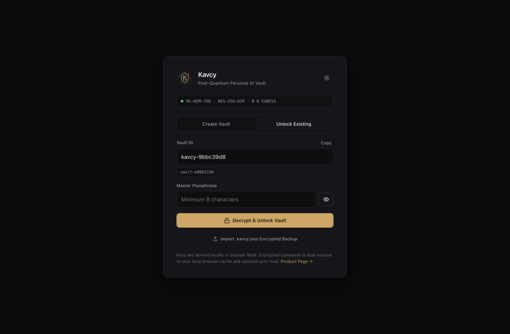

A post-quantum personal AI vault that even its host cannot read.
Kavcy encrypts your conversations, drag-and-drop RAG documents, memories, and custom agent skills inside browser RAM before anything syncs. Verify 0 B external traffic live, validate your hardware before pulling local models, and unload models in 1 click to reclaim 100% CPU & RAM.
Zero-knowledge privacy without the setup nightmare.
Most cloud chatbots read your prompts and train on your life. Most local tools force you to debug Docker or crash 8 GB laptops with oversized models. Kavcy gives you cryptographic proof and consumer-grade polish.
| Capability | Cloud AI Chatbots | Local-Only Tinker Apps | Kavcy |
|---|---|---|---|
| Post-Quantum Vault (ML-KEM-768 + AES-256-GCM) | No | Rarely | ✓ Client-Side Default |
| Realtime Zero-Egress Network Meter + Air-Gap Switch | No | No | ✓ Live 0 B Proof |
| Hardware RAM Validator (Blocks Incompatible Models) | N/A | Manual | ✓ Automatic Guard |
| 1-Click Model Unload (Free 100% CPU & RAM) | N/A | CLI Only | ✓ Instant Kill Switch |
| Drag-and-Drop Client-Side RAG with Citations | Plaintext Upload | Complex Setup | ✓ 100% In-Browser RAM |
| Desktop + iPad + Mobile PWA | Yes | Desktop Only | ✓ Responsive Everywhere |
From zero to post-quantum private AI in 60 seconds.
Create or Unlock Your ML-KEM-768 Vault
Pick a Vault ID and master passphrase (or generate a 6-word post-quantum phrase). Keys are derived locally via PBKDF2-SHA512 (310,000 rounds) and wrapped with NIST FIPS 203 ML-KEM-768.


Chat Privately, Drop Documents & Toggle Skills
Drag and drop .txt, .md, .csv, .json, or code files
directly onto the chat to chunk and search them locally in RAM. Save separate encrypted conversations,
run slash commands (/rag, /unload, /lock), and toggle custom skills.
Prove 0 B Outbound Traffic & Protect Your RAM
Monitor every request live with the Realtime Network Meter and flip the Air-Gap Kill Switch to block non-localhost traffic. Validate which local models fit your RAM — incompatible models are automatically blocked — and unload models anytime to free 100% CPU & RAM.


Interactive Get Started Guide & Privacy Checklist
Built right into the left-side navigation: track your live Privacy Readiness Checklist, reference slash
commands and keyboard shortcuts (⌘K), and jump straight into any security tool.
Integrate Kavcy into your own Node.js & Python systems.
Embed post-quantum ML-KEM-768 + AES-256-GCM encrypted vaults, Shamir 3-of-5 recovery shards,
IndexedDB storage, and local client-side RAG directly in your applications.
Node.js & TypeScript (@kavcy/sdk)
Zero-knowledge ML-KEM-768 vault, Shamir M-of-N shards, and RAG with full TypeScript types.
npm install @kavcy/sdk
import { KavcyVault, splitSecret } from '@kavcy/sdk';
const v = await KavcyVault.create('app', pass);
const env = await v.encrypt({ secret: 'data' });Python (kavcy-sdk)
Pure-Python zero-knowledge vault, GF(2⁸) Shamir secret sharing, and local RAG chunker.
pip install kavcy-sdk
from kavcy import KavcyVault, split_secret
env = KavcyVault("app", pass).encrypt({"k": "v"})
shards = split_secret(pass, 5, 3)New in v1.1 — High-Impact Upgrades
• Gigabyte IndexedDB encrypted vault
• 3-of-5 Shamir recovery shards
• Burn-After-Close RAM-only threads
• Native Local Ollama bridge + tok/s
• Split-Pane Artifact Canvas
• Live Host RAM Sparkline
Run on Web, iPad, macOS, or Windows.
Latest Release: v1.0.0 · Built & verified automatically via GitHub Actions
Web & Mobile PWA
Zero installation. Runs on macOS, Windows, iPadOS, iOS, and Android with offline encrypted caching.
Launch Web AppmacOS Executable (.dmg)
Apple Silicon native desktop app (.dmg) with local encrypted vault & hardware RAM guard.
Windows Executable (.exe)
Native Windows installer (Setup.exe) and standalone portable executable.
View all builds, checksums & release notes on GitHub Releases · Read the Architecture Spec & Privacy FAQ.